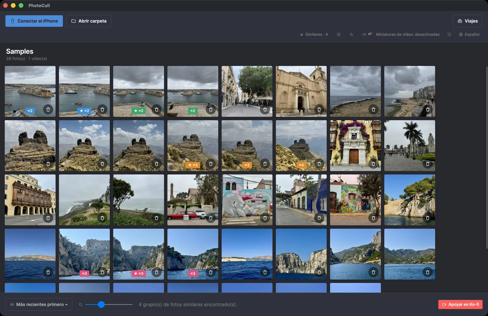
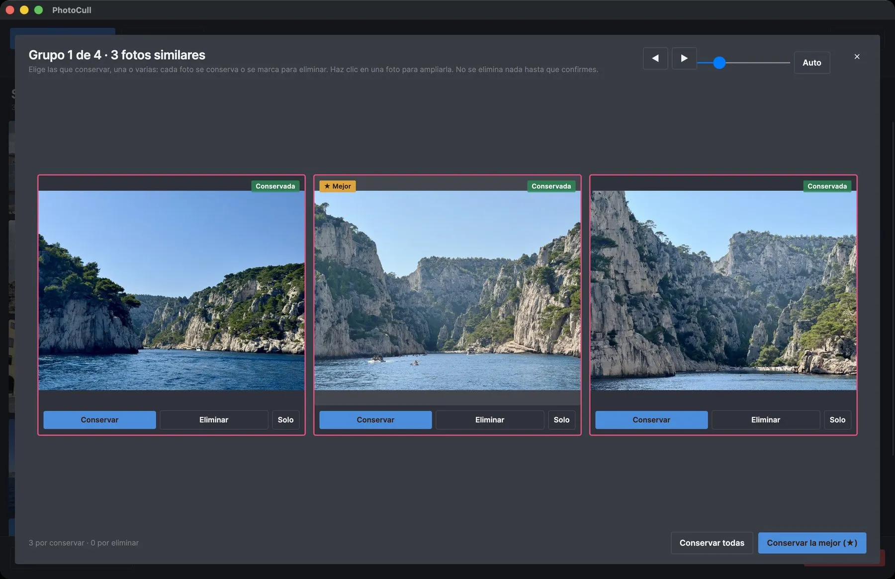
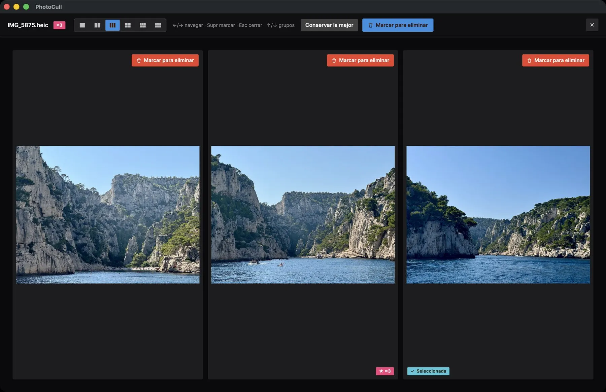
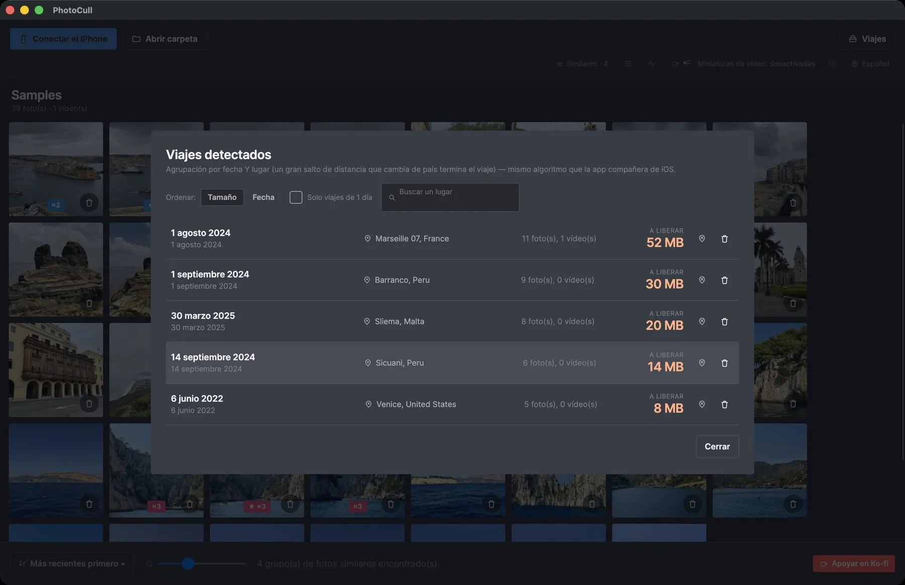

Ordena miles de fotos de iPhone y Android en tu Mac o PC
PhotoCull es una aplicación de escritorio completa: muestra todo el carrete de tu iPhone o teléfono Android agrupado por estancia, compara tus fotos una junto a otra y elimina en masa lo que ya no vale la pena conservar — directamente desde tu Mac o PC.

Un vistazo a la app



Conecta tu teléfono en un minuto
En el primer inicio, PhotoCull pregunta dónde están tus fotos y te guía paso a paso.
iPhone, por USB
Mac y Windows. Conecta el iPhone, desbloquéalo y toca «Confiar», luego haz clic en «Conectar el iPhone». En Windows, instala antes la app gratuita Dispositivos Apple.
Android, por wifi
Mac y Windows. Abre la pestaña Eliminación de TripSweep en el teléfono, haz clic en «Teléfono Android» en PhotoCull y elige tu teléfono. Autoriza el ordenador una vez: el mismo código de 4 cifras aparece en ambas pantallas.
Android, por USB
Windows. Conecta el teléfono, elige «Transferencia de archivos» en su notificación USB y haz clic en «Teléfono Android» y «Conectar por USB». Un Mac no lee teléfonos Android por USB: usa el wifi.
Una carpeta
Cualquier carpeta de tu ordenador o de un disco: haz clic en «Abrir carpeta» o arrástrala a la ventana. Sin teléfono, sin límite diario.
Qué hace la app
Vista "Viajes / estancias"
Toda tu biblioteca de fotos agrupada automáticamente por estancia (tiempo Y lugar, igual que la app de iOS) — detecta de un vistazo los viajes que ocupan más espacio.
Comparación lado a lado
Muestra hasta 6 fotos similares a la vez para elegir la mejor — ideal para ordenar ráfagas y casi duplicados.
Eliminación en masa, con total seguridad
Marca cientos de fotos en pocos clics. En un iPhone, PhotoCull las elimina directamente por el cable USB y guarda por defecto una copia en tu ordenador durante 30 días; en un teléfono Android, la eliminación pasa por la app TripSweep y la papelera del teléfono (30 días). Detalles y condiciones más abajo.
El tamaño que importa
Ordena y filtra por estancia de 1 día, por lugar excluido (casa, trabajo...), por tamaño — los mismos filtros que en la app de iOS, pensados para ir rápido.
Conexión directa con el teléfono
Conecta tu iPhone por USB, o tu teléfono Android por wifi (o USB en Windows): PhotoCull lee tu carrete directamente, sin nube ni servidor.
100 % en el dispositivo
Ninguna foto ni ubicación GPS se envía nunca a ningún sitio. El reconocimiento de lugares funciona completamente en local, sin cuenta ni suscripción.
Gratis, con una mejora de pago único
Nunca una suscripción. Explorar, comparar y ordenar es siempre gratis. Los planes solo fijan cuántas fotos puedes eliminar al día en TripSweep.
Gratis
0 $
Explora, compara y ordena todo. 3 eliminaciones al día en el teléfono y hasta 6 fotos al día desde el ordenador cuando la eliminación pasa por TripSweep.
Pro
4,99 $ · pago único
Eliminación ilimitada en el teléfono, lugares personalizados ilimitados y acciones masivas en varias estancias. Hasta 15 fotos al día desde el ordenador a través de TripSweep.
Precios en dólares estadounidenses; la App Store y Google Play los muestran en tu moneda. Compras en la app TripSweep del teléfono. Desde el ordenador, PhotoCull elimina directamente las fotos de un iPhone por USB, sin límite diario y sin nada que comprar: requiere Fotos en iCloud desactivado y, en un Mac, macOS 27 o posterior, y es definitivo en el iPhone (queda una copia 30 días por defecto en el ordenador). Pro + Desktop ya no se vende; quienes ya lo compraron conservan la eliminación ilimitada desde el ordenador a través de TripSweep. Ordenar una carpeta del ordenador nunca está limitado.
Eliminar desde el ordenador: iPhone y Android
iPhone: PhotoCull elimina las fotos directamente por el cable USB, sin límite diario y sin nada que comprar; la app TripSweep no hace falta. Funciona con Fotos en iCloud desactivado en el iPhone (cuando está activado, Apple no permite esta eliminación) y, en un Mac, macOS 27 o posterior; también funciona en Windows. La eliminación es definitiva en el iPhone: las fotos no pasan por « Eliminados recientemente ». Por defecto, PhotoCull guarda durante 30 días una copia de cada elemento eliminado en tu ordenador, en una carpeta « PhotoCull Trash » dentro de Imágenes, de modo que un error se puede deshacer importando de nuevo el archivo.
En un iPhone, la app TripSweep (gratuita) sigue siendo una opción: elimina a través de « Eliminados recientemente » del iPhone (30 días), hace casi instantáneo el análisis de estancias y es el camino cuando Fotos en iCloud está activado o tu Mac tiene macOS 26 o anterior. Android: la app TripSweep es imprescindible: aplica la eliminación en el teléfono a través de su papelera (30 días). Las eliminaciones que pasan por TripSweep tienen un límite diario: 6 fotos al día gratis, 15 con Pro. Las carpetas del Mac o del PC se ordenan sin ella.
Guías para ordenar tus fotos en el ordenador
Cómo ordenar las fotos del iPhone en el Mac
Ordena miles de fotos del iPhone en tu Mac: qué hacen Fotos y Captura de Imagen, y una forma más rápida de agrupar, comparar y borrar.
Cómo ordenar las fotos del iPhone en un PC con Windows
Ordena miles de fotos del iPhone en Windows 10 u 11: qué muestran la app Fotos y el Explorador, y una forma más rápida de ordenar y borrar.
Cómo ordenar miles de fotos más rápido en un Mac o un PC
Por qué ordenar fotos en una pantalla grande es mucho más rápido que en el móvil, y un método sencillo para repasar miles de fotos en una sola sesión.
Cómo liberar espacio en el iPhone desde un Mac o un PC con Windows
Conecta tu iPhone, ordena fotos en una pantalla grande y borra lo que no necesitas, sin iCloud y sin enviar nada a internet.
Cómo comparar fotos parecidas y quedarte con la mejor
Una rutina sencilla para elegir la mejor toma entre fotos casi idénticas: en qué fijarte y cómo hacerlo rápido en una pantalla grande.
Cómo buscar fotos duplicadas y parecidas en un Mac
Encuentra copias exactas, ráfagas y tomas casi idénticas en las carpetas de tu Mac o en un disco externo, conserva la mejor y manda el resto a la Papelera.
Cómo buscar fotos duplicadas y parecidas en Windows 10 u 11
Encuentra copias exactas, ráfagas y tomas casi idénticas en tu PC o en un disco externo, conserva la mejor y manda el resto a la Papelera de reciclaje.
Cómo ordenar una carpeta enorme de fotos, o un disco externo entero
Copias antiguas, tarjetas de cámara, un disco externo lleno: un método sencillo para ordenar miles de fotos por viaje, quitar casi copias y conservar lo mejor.
Cómo ordenar las fotos de Android en un Mac
Un Mac no lee los móviles Android por USB. Cómo ordenar miles de fotos de Android en el Mac por wifi y borrar lo que no necesitas.
Cómo ordenar las fotos de Android en un PC con Windows
Ordena miles de fotos de Android en Windows 10 u 11: qué muestran el Explorador y la app Fotos, y una forma más rápida de agrupar y borrar.
Cómo liberar espacio en tu móvil Android desde un Mac o un PC
Conecta tu móvil Android, ordena las fotos en una pantalla grande y borra lo que no necesitas, sin pagar Google One y sin subir nada.